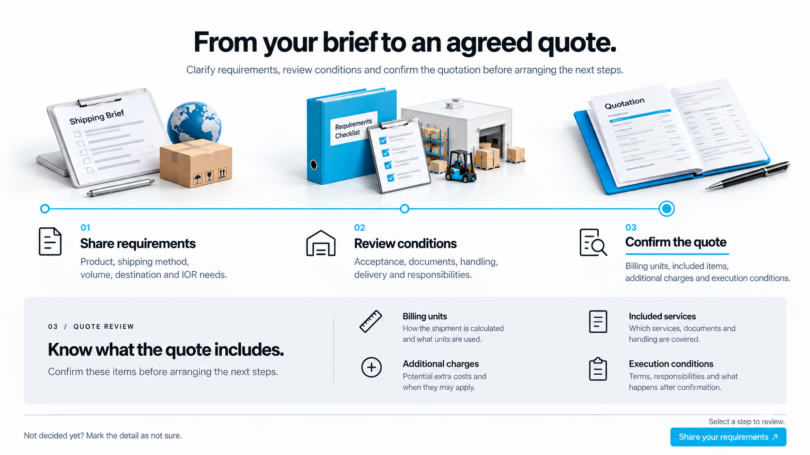

HOW IT WORKS
From your brief to an agreed quote.
Clarify requirements, review conditions and confirm the quotation before arranging the next steps.
Select a step to review.
Not decided yet? Mark the detail as not sure.
Share your requirements ↗HOW IT WORKS
Clarify requirements, review conditions and confirm the quotation before arranging the next steps.
Select a step to review.
Not decided yet? Mark the detail as not sure.
Share your requirements ↗가로형 이미지 시안. 위 HTML은 단계별 정보 전환을 확인하는 인터랙션 스터디입니다. CTA는 현재 개발 사이트의 견적 섹션으로 연결됩니다.
